Intro 01
Zoom
Islamic Supplications & Daily Adhkar
Daily Duas withEnglish & Urdu Translation
Essential daily Islamic supplications for prayer, protection, eating, sleeping, and everyday Muslim life. Practice authentic Arabic pronunciation alongside meaningful translations designed for children and adult learners.
Curriculum Roadmap
Supplications Taught in Our Islamic Studies Program
Our personalized curriculum introduces students to essential supplications in progressive, easy-to-memorize categories.
01
Faith & Azan
Iman-e-Mufasal, Arabic Azan call, its Urdu & English translation, and the sunnah supplication after Azan.
02
Salah Step-by-Step
Complete step-by-step Namaz supplications: Sana, Surah Fatiha, Ruku, Sajdah, Tashahhud, Durood-e-Ibrahim, and Salam.
03
Quranic Protections
Ayat-ul-Kursi for divine protection and Dua-e-Qanoot for the Witr prayer with deep English and Urdu explanations.
04
Daily Routine Duas
Eating, sleeping, waking, entering/leaving home & mosque, mirror, new moon, fasting (Suhoor/Iftar), and Shab-e-Qadr.
Visual Dua Cards
Miscellaneous Duas — English & Urdu Translation
Explore our complete collection of essential Islamic supplications. Click any card to inspect the full Dua in high resolution with interactive zoom and translations.
Intro 02
Zoom
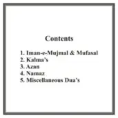
Dua 01
Zoom
Dua 02
Zoom
Dua 03
Zoom
Dua 04
Zoom
Dua 05
Zoom
Dua 06
Zoom
Dua 07
Zoom
Dua 08
Zoom
Dua 09
Zoom
Dua 10
Zoom
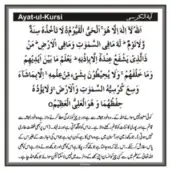
Dua 11
Zoom
Dua 12
Zoom
Dua 13
Zoom
Dua 14
Zoom
Dua 15
Zoom
Dua 16
Zoom
Dua 17
Zoom
Dua 18
Zoom
Dua 19
Zoom
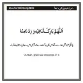
Dua 20
Zoom
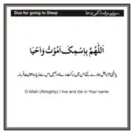
Dua 21
Zoom
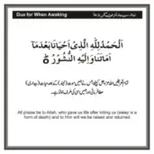
Dua 22
Zoom
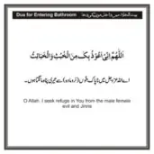
Dua 23
Zoom
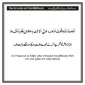
Dua 24
Zoom
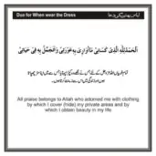
Dua 25
Zoom
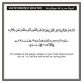
Dua 26
Zoom
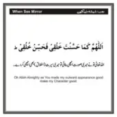
Dua 27
Zoom
Dua 28
Zoom
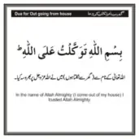
Dua 29
Zoom
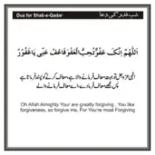
Dua 30
Zoom
Dua 31
Zoom
Why Learn Duas Online?
Building a Lifelong Habit of Remembrance
Dua is the essence of worship. Our tutors help students connect their daily actions with conscious remembrance of Allah.
★
Accurate Arabic Pronunciation
Trained teachers ensure correct articulation (Makharij) so supplications are recited with reverence and phonetic precision.
★
Comprehension in English & Urdu
Students learn not only the Arabic words but also what they mean, cultivating heartfelt reflection rather than rote memorization.
★
Practical Daily Sunnah Etiquettes
From eating and sleeping to entering the mosque, teachers guide learners on the practical sunnah etiquettes associated with each supplication.
Frequently Asked Questions
Common Questions About Learning Duas
Everything you need to know about our supplication learning classes and syllabus.
At what age should children start learning daily Duas?
Children as young as 4 or 5 can begin learning short, everyday supplications such as Bismillah before eating, Alhamdulillah after meals, and bedtime prayers. As reading confidence grows, longer supplications like Ayat-ul-Kursi and Dua-e-Qanoot are progressively introduced.
Can adults enroll in Duas and Salah correction classes?
Yes. Many adult learners join to review their Namaz steps, master the pronunciation of Dua-e-Qanoot and Tashahhud, and understand the deep spiritual meanings behind daily supplications in English or Urdu.
Are these Duas taught alongside Noorani Qaida or Quran reading?
Yes. Supplications are integrated into our foundational Quran and Islamic Studies programs so students learn Quranic recitation alongside practical prayers in every lesson.
Can we request a female tutor for sisters or young children?
Yes. Quran & Science has dedicated, experienced female instructors available for sisters, girls, and young children worldwide.
Want your child to learn essential Duas with a personal tutor?
Enroll in a 3-day free trial session. Our dedicated Quran teachers help children and adult learners memorize daily supplications with correct pronunciation and deep understanding.